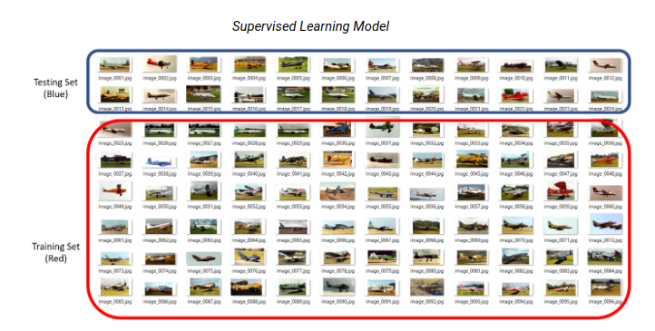
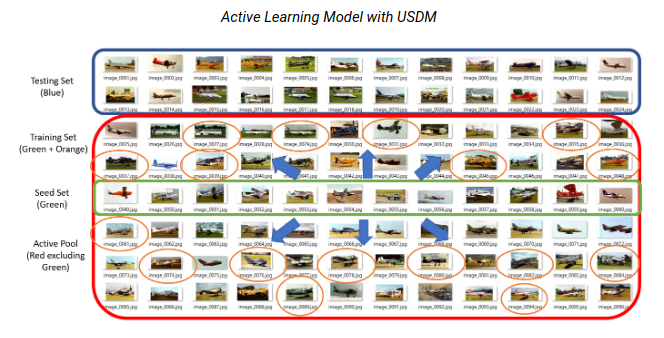
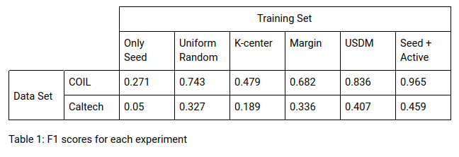
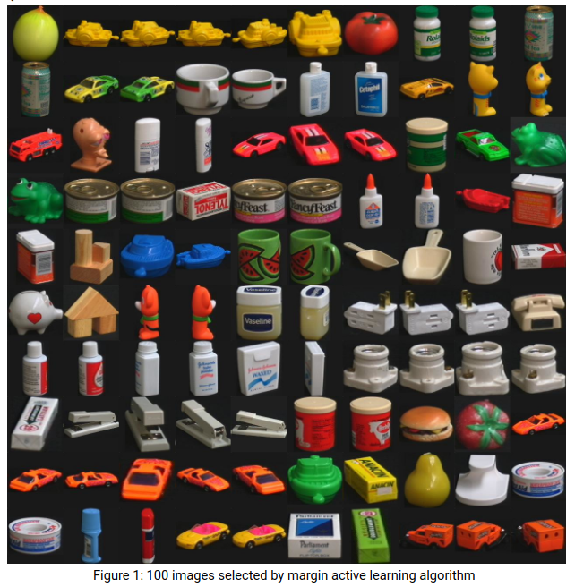
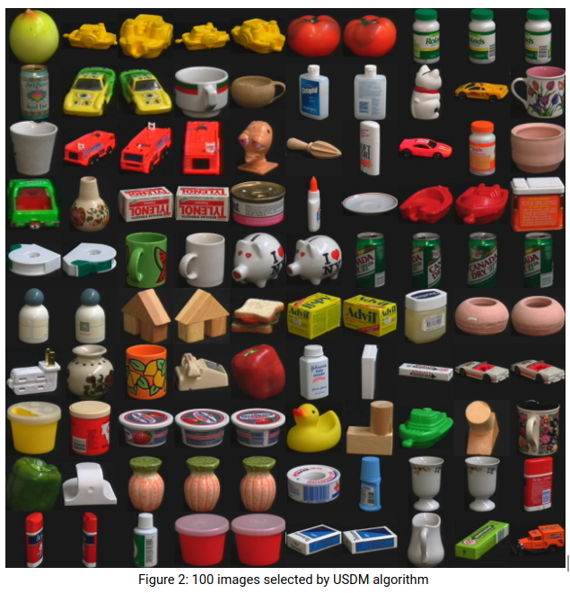

Multi-Class Active Learning and Image Classification
Alhad Daftardar, Anish Visaria, Jason Lee, Naren
Dikkala, Timothy Gieseking Fall 2018 CS 4476 Computer Vision: Class Project Georgia Tech
Abstract
Machine learning methods for image classification require large number of manually labeled images. For
traditional supervised learning methods, obtaining the necessary number of labeled images can be prohibitively
expensive. We implemented the uncertainty sampling with diversity maximization (USDM) active learning algorithm,
which is intended to decrease the number of necessary number of labeled images by utilizing many unlabeled
images. We also test the performance of USDM on image classification problems using an SVM and SIFT bag-of-words
representation. Our results show that USDM yields better classification performance than either the k-center or
margin active learning algorithms.


Introduction
Machine learning methods have been very successful for image classification, achieving high accuracy rates.
However, machine learning methods typically require large numbers of labeled images, which can be time-consuming
and expensive to obtain. On the other hand, it is possible to automatically obtain unlabeled images at a low
cost.
Active learning is a category of semi-supervised learning algorithms used to reduce the necessary number of
labeled images for machine learning. In active learning, the learning algorithm is given a small set set of
labeled data and a large set of unlabeled data called the active pool. The active learning algorithm selects a
subset of the active pool to be labeled, intended to be the most informative examples. Finally, a classifier is
trained on the labeled seed set and selected subset of the active pool.
The Uncertainty Sampling with Diversity Maximization (USDM) algorithm is an active learning technique proposed by
Yang et al. [6]. USDM is intended to address problems that can occur with other active learning algorithms when
there are many classes and a small seed set. The USDM algorithm selects a training set that has maximum
uncertainty while maintaining high diversity. The diversity maximization criterion addresses the issues of a
clustered training set that can occur with uncertainty sampling. The USDM algorithm is specifically intended for
classification problems with large numbers of classes.
The first goal of the project was to implement the USDM algorithm in Python. This implementation is novel, as
there is no publicly available USDM code. Additionally, we test the effectiveness of USDM in the case of image
classification using a support vector machine with a SIFT bag-of-words representation.
Approach
We assume that we are given a seed set of unlabeled images and an active pool of unlabeled images. First, the
SIFT features are computed for the images in the seed set and active pool using the OpenCV [4]. Then, 100 random
SIFT features are chosen from each classes and clustered into 2000 clusters using the k-means algorithm. The
number of features and clusters were selected empirically; however, since these hyperparameters are the same for
each active learning algorithm, we do not expect the values to strongly affect relative performance. Then, SIFT
is applied to each of the images in the seed set and active pool and we calculate the histogram of SIFT features
in each of the clusters, which is called the bag-of-words representation of the image.
Then, the USDM algorithm is applied to the bag-of-words representation of the seed set and the active pool. USDM
selects a subset of the active pool of images that balances attaining maximum classification uncertainty and
maximum diversity of the subset. The USDM hyperparameters were set in accordance with the recommendations by Y.
Yang et al. [6]. The selected subset of the active pool is labeled and appended with the seed set to form the
training set.
A SVM with radial basis function (RBF) kernel is used for image classification using the scikit-learn package. An
SVM with RBF kernel has been shown by Gao et al. [7] to achieve high performance for image classification with
using a SIFT representation. Hyperparameter selection is performed using grid search for C = [0.01, 0.1, 1, 10,
100] and gamma = [0.0001, 0.001, 0.01, 0.1, 1] with 5-fold cross-validation. The SVM is trained on the training
set and corresponding labels. To classify new images, the SIFT bag-of-words representation of the image is
calculated. The trained SVM classifies this bag-of-word representation with the most probable image label.
Experiments
The USDM algorithm was compared to the k-center greedy and margin active learning algorithms. Additionally, as
baseline comparisons, training using only the seed set, the whole active pool, and the seed set together with a
uniformly random selection from the active pool as the test set were evaluated. Experiments were run on the
Caltech 101 [5] and COIL 100 [1] image classification data sets.
For each of the data sets above, a 20% stratified sample of the data set was taken as the test set, and the
remaining 80% of the data set as the training candidate set. From the training candidate set, the seed set was
created by selecting three examples from each class, and the remaining examples in the training candidate set
were used as the active pool.
For each combination of training set selection algorithm and data set above, an experiment of the following form
was performed. Given the labeled seed set and the unlabeled active pool, the training set selection algorithm
selects a number of images from the active pool equal to ten times the number of classes. The training set is
then created as the union of the seed set and the selected subset of the active pool. A SVM is trained on the
labeled training set. Finally, the trained classification model is tested on the test set and scored using the F1
score with micro-averaging.
Results

Table 1 shows the F1 classification score achieved for each of the data sets and training set selection method.
These results show that the k-center and margin active learning algorithms perform either only slightly better or
worse than random selection. This shows that that k-center and margin are not suitable active learning algorithms
for this application.
In contrast, the classification score using USDM is much higher than when using random selection, k-center, or
margin for both data sets. This indicates that USDM is the best of the tested active learning algorithms for this
application. However, USDM performs significantly lower than the theoretical maximum performance achieved by
using the whole seed and active set, so increased accuracy might be achieved by alternate approaches.
Qualitative Results


Figures 1 and 2 show the results of selecting one hundred images from the active pool on the COIL data set using
the margin and USDM algorithm. One difference between the two selections is the distribution of item classes. The
margin active learning algorithm select many object from some classes, for example five images of the orange car.
In contrast, USDM does not select items from the same class as often due to the diversity maximization criterion.
Based on the previous quantitative results, it is clear that this difference causes USDM to have superior
performance.
Conclusion and Future Work
USDM shows significant improvement compared to other active learning algorithms in a multi class image
classification task. USDM’s two main advantages are its ability to learn with a small seed set and its
flexibility in classifying multi class sets as opposed to binary classification. USDM combines diversity
maximization with uncertainty sampling in order to avoid clustering in the active pool, which is a common pitfall
in other active learning algorithms. The chosen samples are also evaluated on their informativeness across
multiple classes, offering better performance in the multi-class context. We cannot conclusively state if it is a
superior method overall because the scope of the testing did not cover all known active learning algorithms. The
results we have described above are encouraging that USDM is a valid method of performing semi-supervised
learning and can be applied to a variety of problems in the computer vision space.
Future work in this space includes testing the USDM on more and larger data sets, such as TinyImageNet, Amsterdam
Library of Object Images, and the CMU PIE face database. These datasets would let us draw more conclusions as to
the accuracy and applicability of USDM in different situations. In addition, we could test the USDM algorithm
against other active learning methods such as representative cluster mean sampling or graph density sampling that
we were unable to test due to our limited computation power.
Works Cited
[1] "Columbia Object Image Library (COIL-100)," S. A. Nene, S. K. Nayar and H. Murase, Technical Report
CUCS-006-96, February 1996.
[2] Deng, J., Dong, W., Socher, R., Li, L.-J., Li, K., and Fei-Fei, L. (2009). ImageNet: a large-scale
hierarchical image database. In CVPR
[3] Google, “Active Learning Playground,” Github, 2014. https://github.com/google/active-learning
[4] “Introduction to SIFT (Scale-Invariant Feature Transform),” OpenCV. [Online]. Available:
https://docs.opencv.org/3.4/da/df5/tutorial_py_sift_intro.html. [Accessed: 31-Oct-2018].
[5] L. Fei-Fei, R. Fergus and P. Perona. One-Shot learning of object categories. IEEE Trans. Pattern Recognition
and Machine Intelligence. In press.
[6] Y. Yang, Z. Ma, F. Nie, X. Chang, and A. G. Hauptmann, “Multi-Class Active Learning by Uncertainty Sampling
with Diversity Maximization,” International Journal of Computer Vision, vol. 113, no. 2, pp. 113–127, 2014.
[7] H. Gao, L. Dou, W. Chen, and J. Sun, “Image classification with Bag-of-Words model based on improved SIFT
algorithm,” 2013 9th Asian Control Conference (ASCC), 2013.